Cayeux 2010

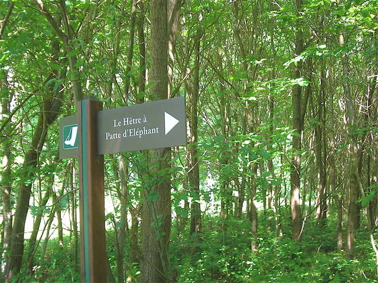
Vendredi, départ pour Cayeux, tranquille, une halte-déjeuner dans la forêt... On m'indique un hêtre spécial, j'irai après le dessert, promis !

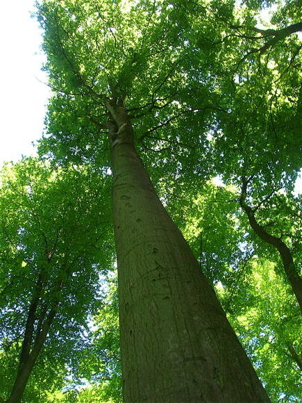
Bon, je marcherai 1 km, mais pas de hêtre spécial, rien qu'une très belle futaie de troncs lisses de 30 m de haut, splendide !

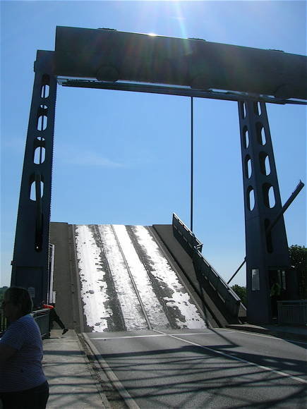
Travers Saint-Valéry, arrêt forcé, le pont se lève. Pas de bateau à l'horizon, mais après 5 mn, un chalutier converti se détache de la rive et s'en vient, piano...

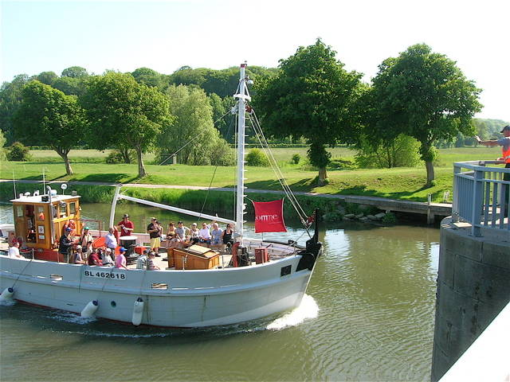
En fait, c'est un ancien baliseur, construit en 1950... à Arcachon ! Immatriculé à Boulogne, il a maintenant son port d'attache à St-Valéry...

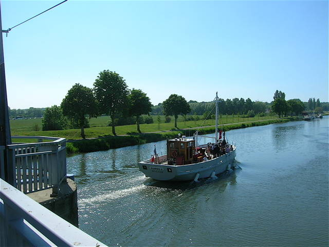
Bon, ben voilà, il est passé, on va pouvoir refermer et ré-ouvrir...

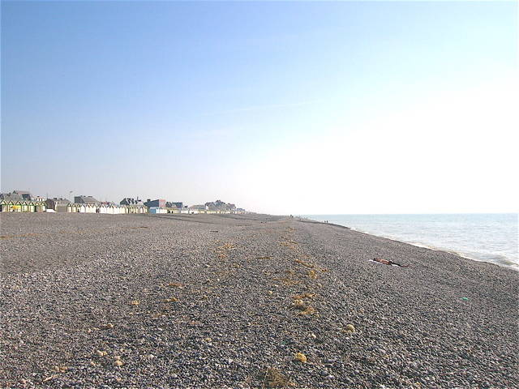
Arrivée à Cayeux, la plage est vaste, mais le sable est très... grossier ! On ne dirait pas, mais à marée basse, il y en a quand même pas mal !

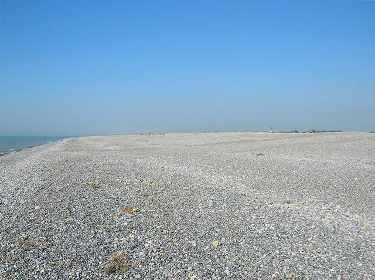
En regardant à droite, ça rappelle plutôt le Ténéré, mais il y a quand même par endroits des plantes, ces incroyables choux des sables auxquels les galets ne font pas peur !

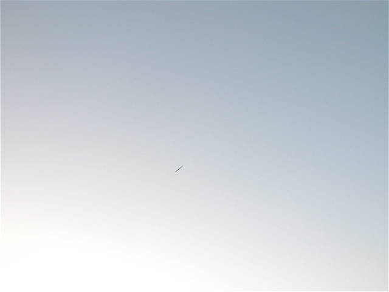
Un bon petit vent, je sors mon oiseau bleu et, heureusement, je le monte un peu : le vent tombe complètement, au sol, mais là-haut, l'oiseau volera jusqu'à ce que je le descende après dîner...

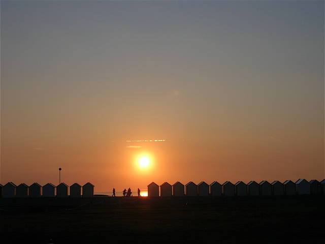
Le soleil se couche derrière la levée de galets qui porte les cabines !

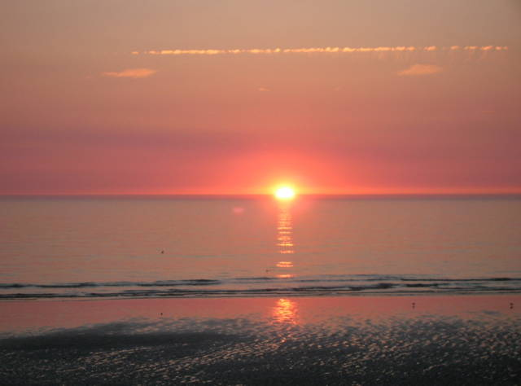
Nous surveillons pour voir si le rayon vert apparaîtra, mais rien... sauf des phoques qui sortent la tête de temps en temps...

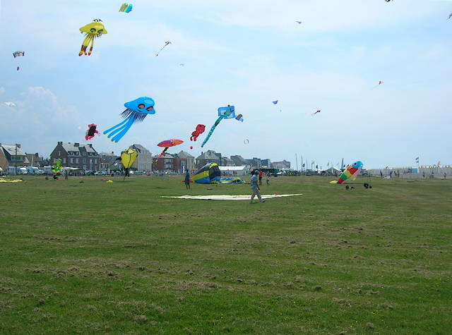
Au matin, les Flandres'Envol sont là et montent leurs grosses méduses et autres joujoux... Fécamp également, et je sortirai mon Albatros pour des tests après modification de bridage (pas très concluantes, mais bon !).

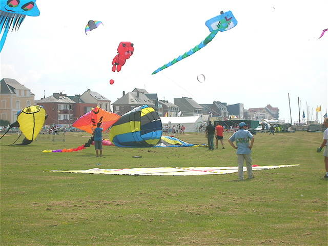
Au premier plan, au sol, un "petit" delta qui doit bien faire 8 m d'envergure, Jean-Louis pose pour donner l'échelle... C'est une réalisation "Vent du Lac" (d'Annecy).

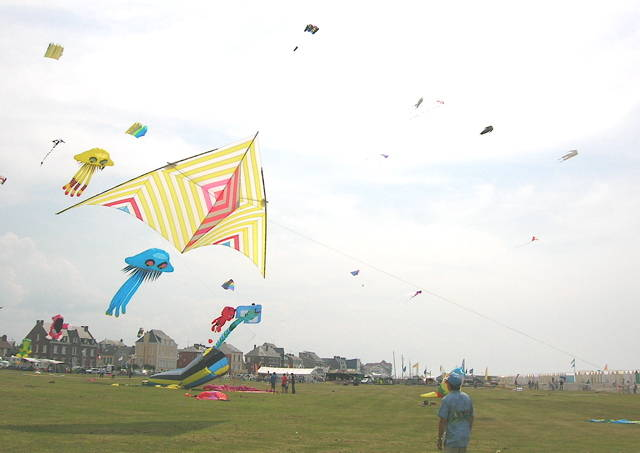
Et le delta s'envole sans problème, il n'a même pas l'air de tirer trop, il est bien tendu !

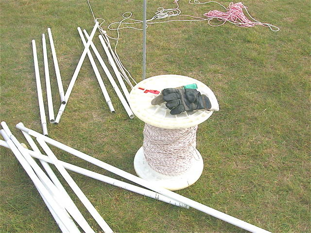
Le propriétaire a trouvé une bobine à l'échelle pour enrouler sa ficelle...

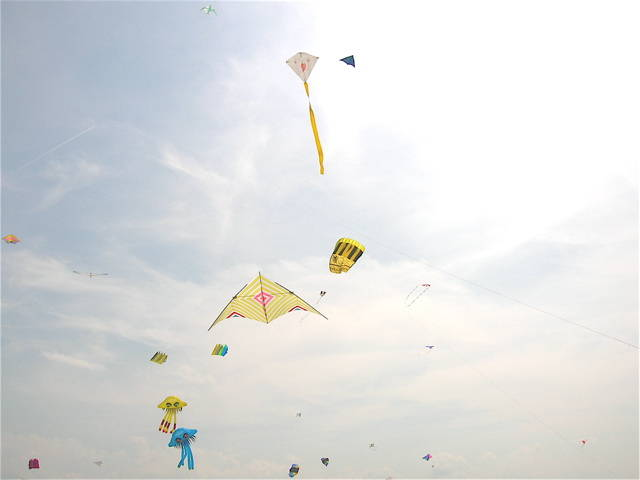
La bête est montée et se stabilise sans problèmes au milieu des autres monstres !

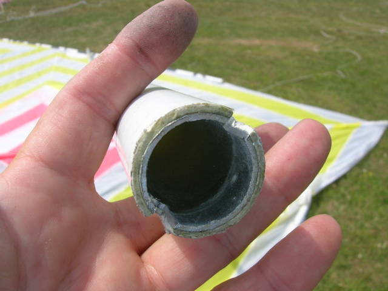
L'armature est en tube plastique de bon diamètre, raccordé via des tubes alu emboîtés en interne...

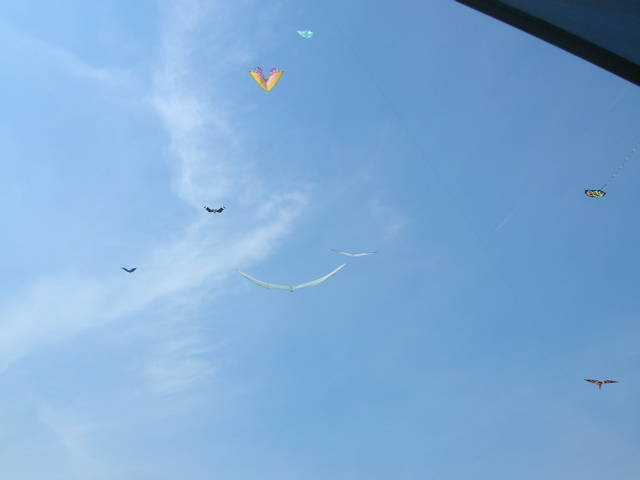
Vent moyen, je peux faire voler mon souple Spiralier en bas, et mon Albatros en altitude ! Au-dessus, 3 Deltas en V, largement échancrés au milieu.

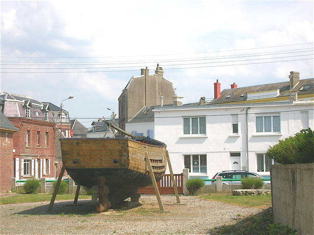
Tout ça vole bien, je vais faire un petit tour en ville ! C'est aussi la fête du Nautisme, on peut visiter la vieille chaloupe du Secours en Mer, et voir une coque de bateau de pêche en bois, en cours de travaux...

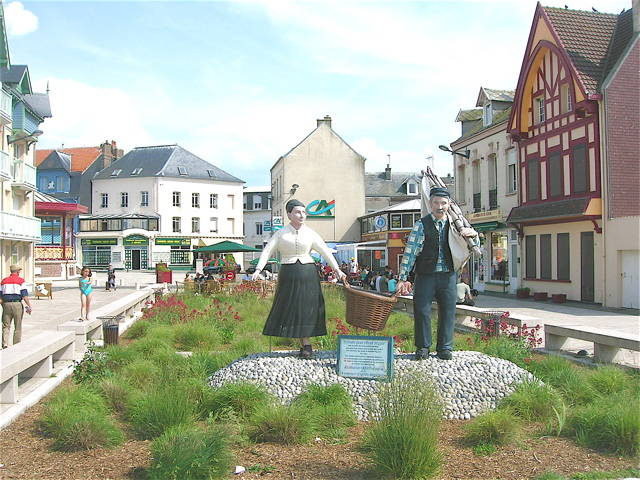
Plus loin, un couple de pêcheurs "In'route pour cheul'régate"... Pour augmenter le temps de pêche, mais être rentré le premier pour vendre, il était intéressant de "gratter" les autres pêcheurs dans ces régates professionnelles ! C'est devenu un beau sport !

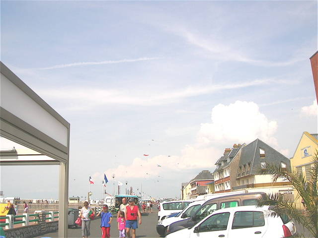
Il fait beau, alors il y a pas mal de monde sur la promenade !

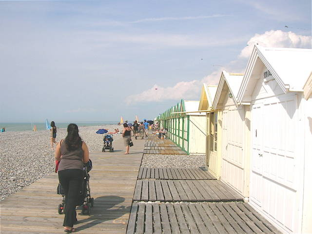
Retour par les "planches", devant les cabines aux couleurs diverses (mais à dominante blanche) et aux noms pittoresques...

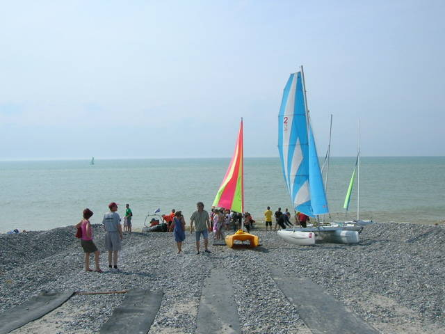
Une initiation à la navigation, à la voile ou au moteur est aussi offerte, au bas de ces pratiques tapis de caoutchouc indestructibles (ou presque)...

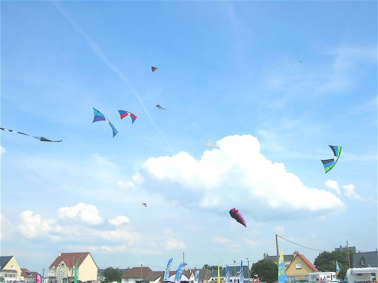
Retour au terrain, dans l'aire de démonstration, un team de Révos du CVC Dieppe, leadé par Eric !

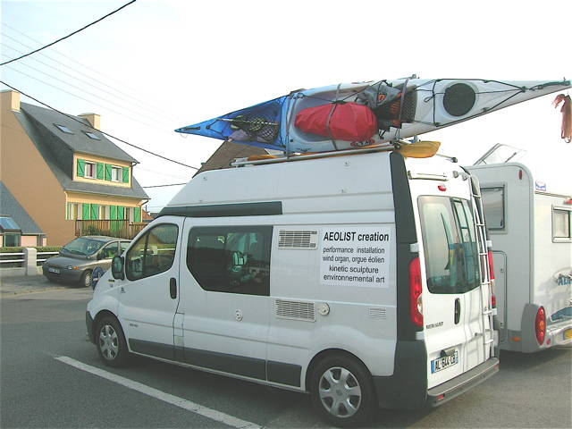
Tiens, un camion marqué "AEOLIST", ça me rappelle quelque chose ! Didier Ferment est de retour, même s'il a changé de véhicule et se spécialise dans les structures décoratives et éolomusicales, dont il montera d'ailleurs un extrait sur les planches...

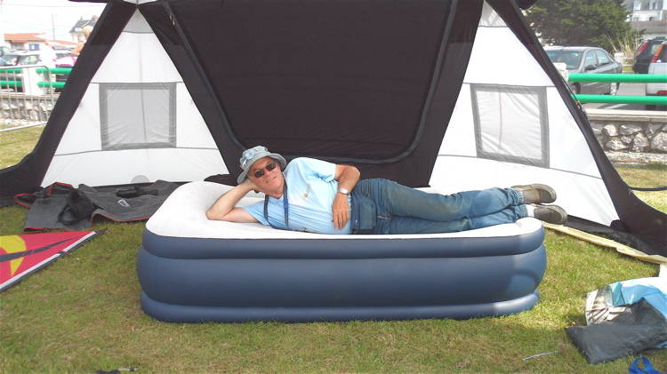
Le CVC Dieppe a monté sa grande tente-dôme de la Ligue FFVL ! Très costaud, et rapidement pliable avec ses articulations. Certains vont y dormir sur ce somptueux matelas pneumatique à gonfleur incorporé !

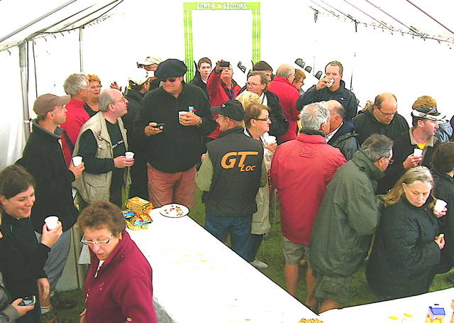
Mais il faut se préparer au vol de nuit ! D'abord, petit apéritif de rigueur qui réunit la soixantaine de participants...

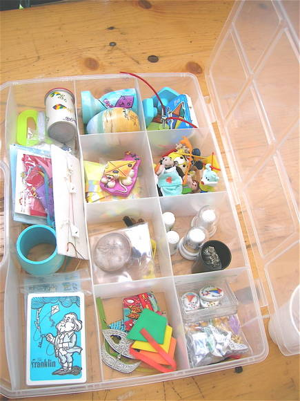
Et puis on se regroupe pour des discussions sans fin. Philippe Lefèbvre montre son album de cartes postales, et sa caisse de bricoles diverses aux armes du cerf-volant et glanées de ci de là...

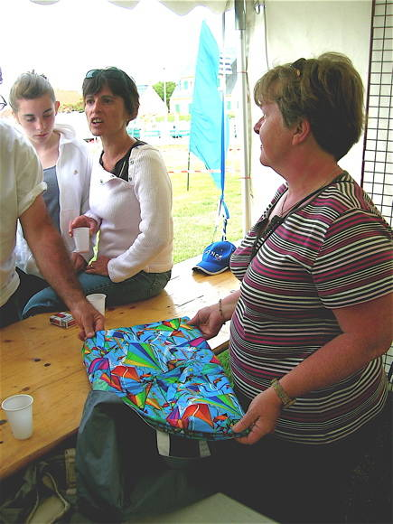
De son côté, Manou expose les tissus, cotonnades et autres, à la décoration du même tonneau...

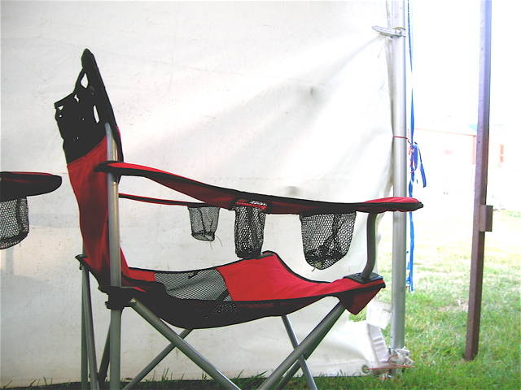
Un fauteuil attend dans son coin, un vrai fauteuil de cervoliste, avec 3 poches pour les verres !

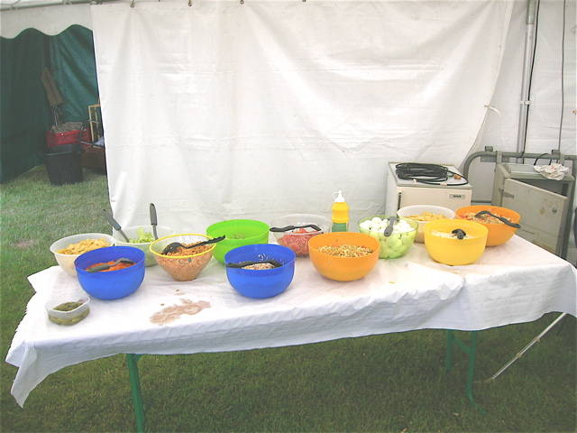
Après l'apéritif, bien sûr, les plats sont installés par la fine équipe recrutée par Bruno Tondellier...

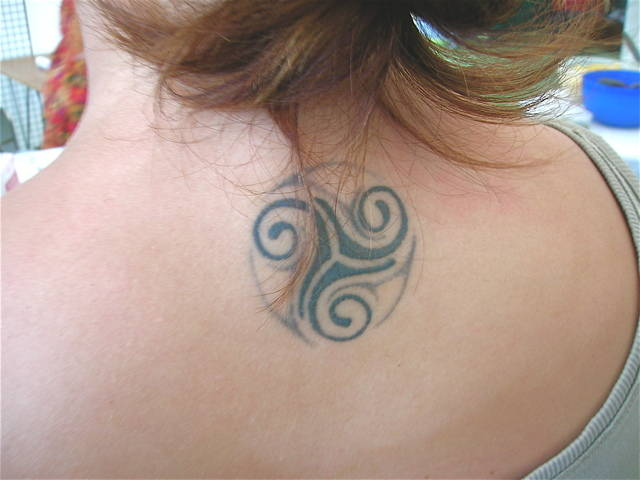
Bon, je n'ai pas été le premier, je fais la queue alors je peux admirer ce tentant Triskell...

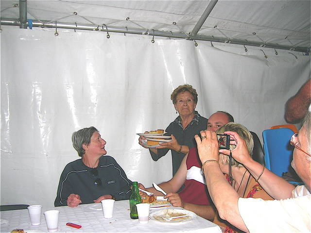
Plat de résistance : barbecue, saucisses, merguez, tranches de lard frit... Et légumes divers, puis fromages, et tartes à la poire ou à la pomme...

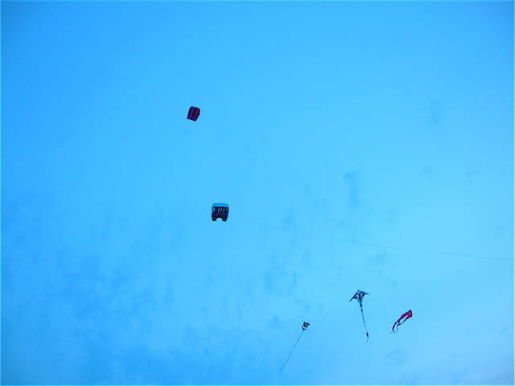
On commence le vol de nuit, les monofils sont déjà là-haut, pour le cas classique où le vent tomberait. Mais on ne les verra guère : pas d'éclairage sauf vers la pelouse, pour les pilotables ! Et la seule mention des monofils dans les commentaires sonores sera "Les monofils, écartez-vous pour laisser de la place aux pilotables" !

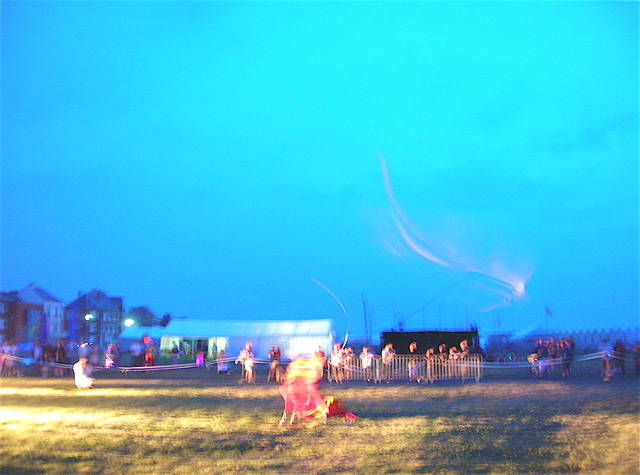
Au sol, Michel Vanesh, accoutré en chevalier normand aux 2 léopards fera son numéro... indoor, avec un cerf-volant oie-flêche au bout d'une canne...

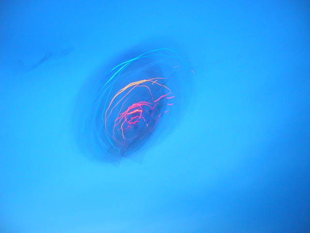
Joël Goupil fera voler (difficilement et pas longtemps...) son parapluie rotatif porteur de guirlandes lumineuses !

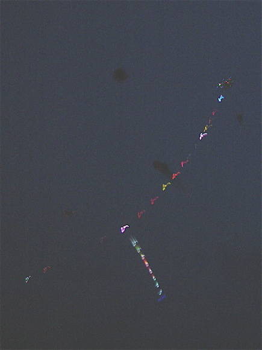
Il fait maintenant bien nuit, un monofil a monté, le long de sa ligne et en pendeloque, cette guirlande lumineuse du plus bel effet...

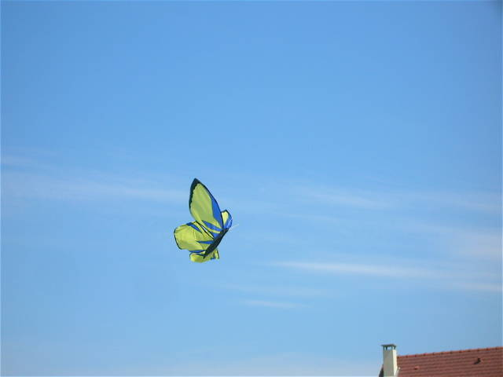
Dimanche matin, rien ! Il pleut depuis 3 h du matin, avec des grondements inquiétants ! En plus, les toilettes, pourtant automatiques, n'ouvrent pas le dimanche, ça part mal ! En début d'après-midi, le ciel se découvre et un bon vent régulier s'installe parallèlement à la plage. Dominique Cottard est arrivé avec une bande de Soissons...

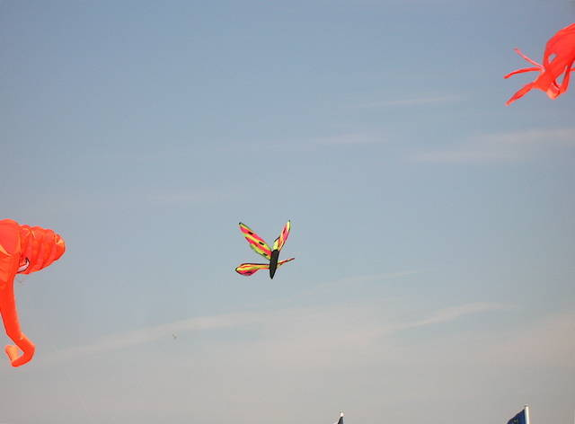
En fait, il avait créé un atelier enfant, mais ce sont les grands-mères qui ont mordu et se lancent dans la construction et les déplacements !

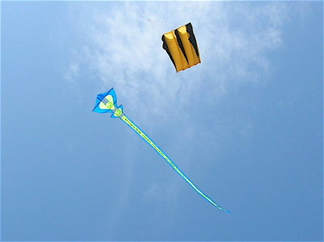
J'ai bien aimé aussi cet harmonieux grand serpent du CVC Dieppe, évidemment bien stable...

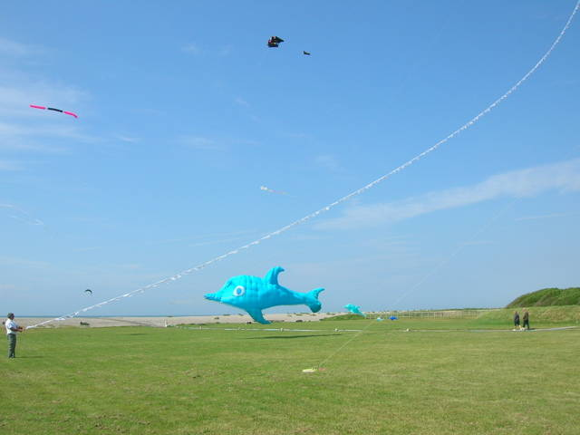
Au-dessus d'un beau et grand dauphin bleu, Jean-François Lorente a monté, avec sa magnifique ligne décorée, son delta... noir et blanc, mais avec une touche de bleu ! C'est la décadence, Jean-François !

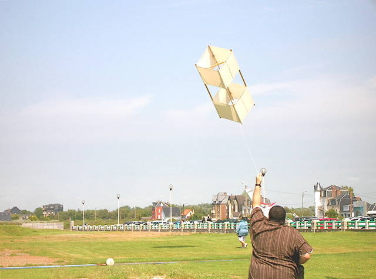
Dominique Cottard essaye encore une boîte Bois-Coton, mais le vent, très fort maintenant, ne facilite pas les essais !

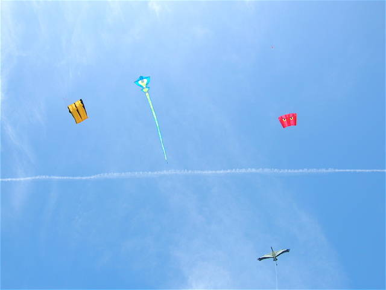
Dans le ciel structuré tout là-haut par une traînée persistante, je monte quand même ma grue, un bon test pour trouver la force limite qu'elle peut supporter ! J'arriverai à trouver un réglage où elle reste bien en l'air, même si elle se promène un peu !

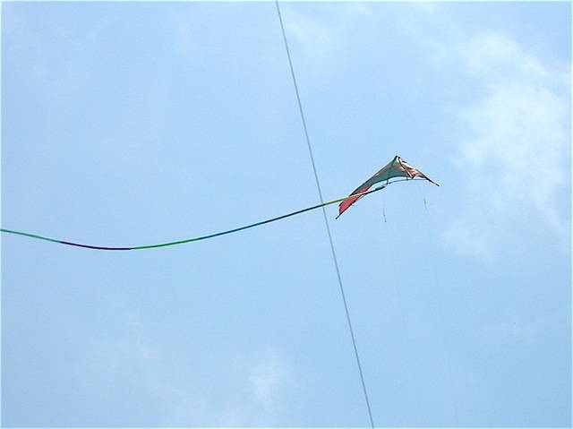
Sur le terrain des pilotables un deux-lignes des débuts de la chose a été réveillé. C'est un genre de Hawaï, avec des barres rigides aux arêtes !

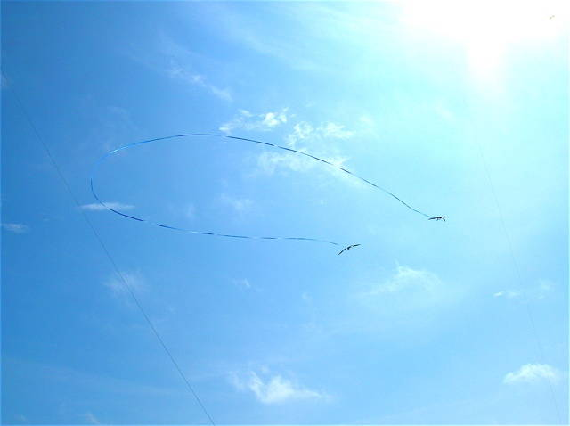
Il y aura plusieurs démos en paires ou en teams, dont la paire Seb-Jérémy, et les Aliens avec leur spectaculaire ruban unissant les deux cerfs-volants et que j'ai trouvés très précis maintenant malgré le vent fort...

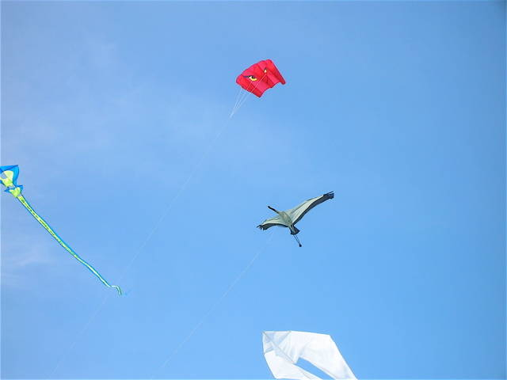
Ma grue se tient bien, malgré un vent monté à 38 km/h (en pointe)...

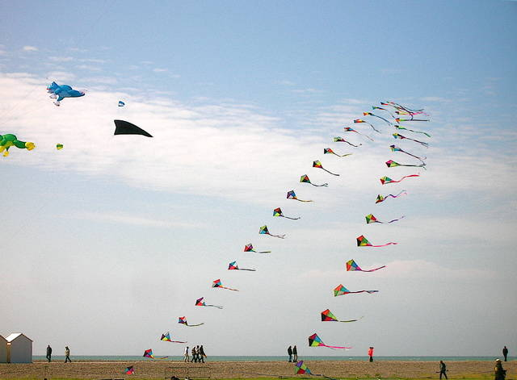
Une belle arche d'Eddies très colorés a été montée, et ce n'est pas elle qui souffrira du vent !
Cayeux 2010 : La pelouse en bord de mer est vaste et plane, parfaite pour le festival ! L'accueil est bon, avec une bonne équipe de bénévoles chaleureux ! On reviendra !